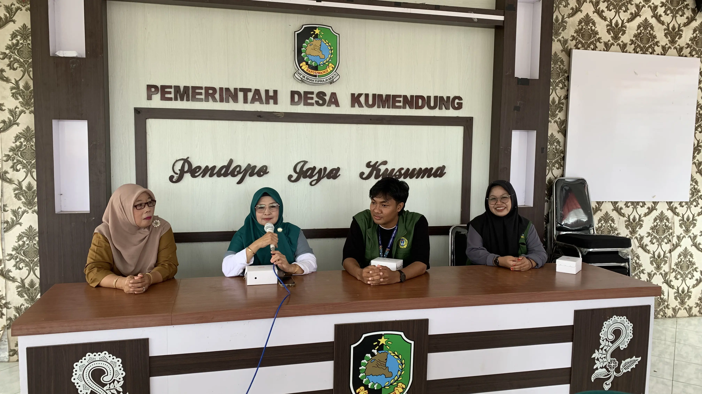
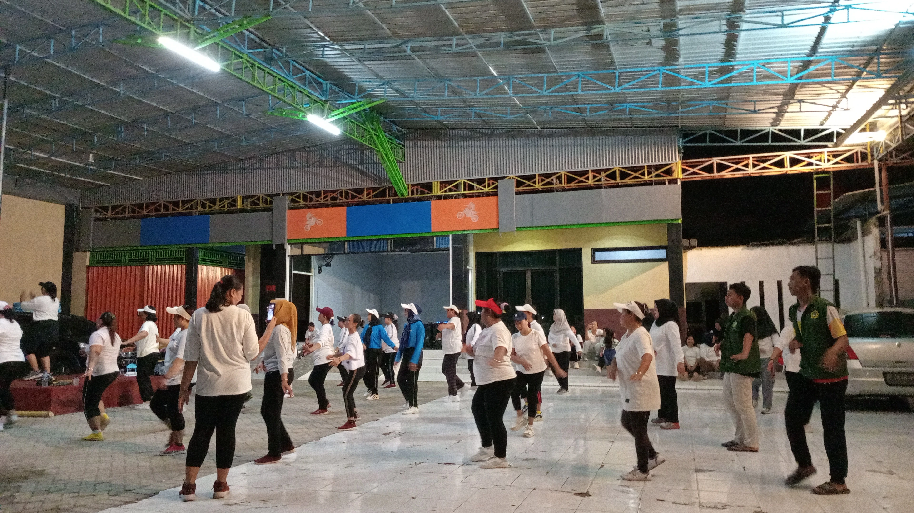
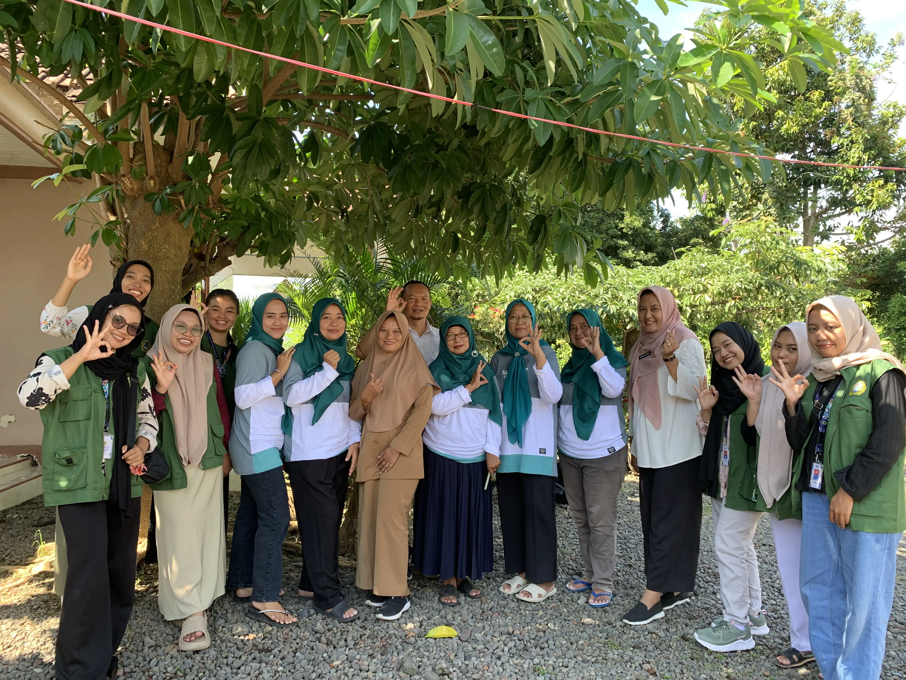
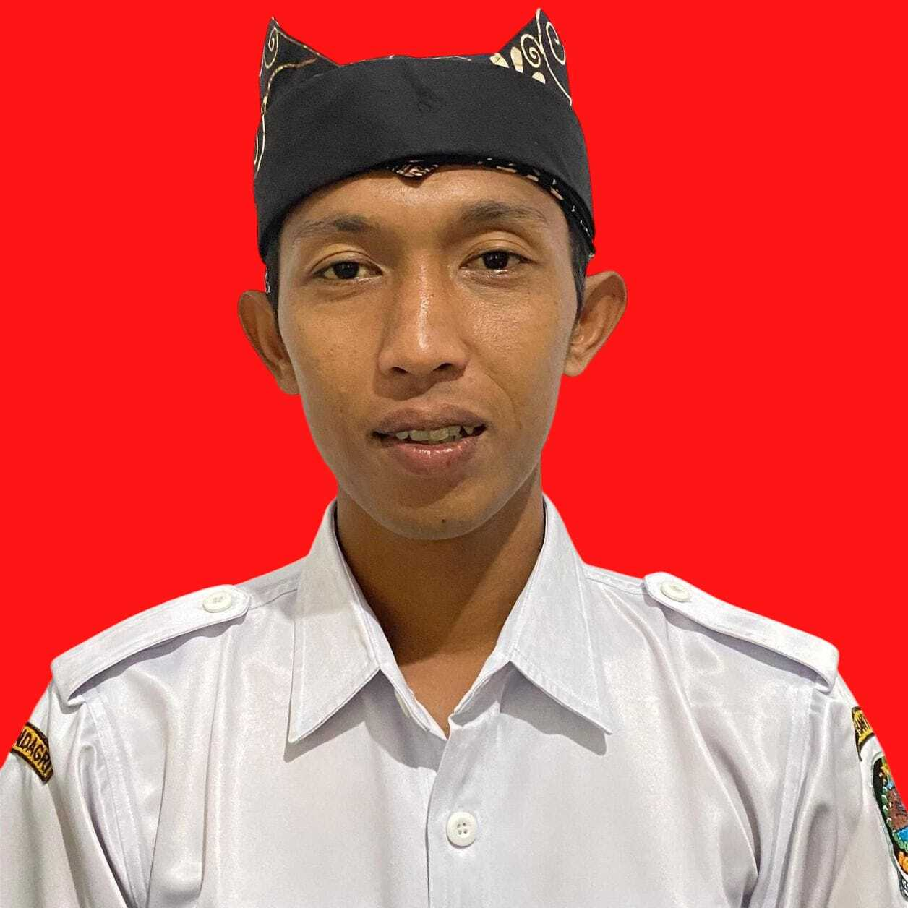
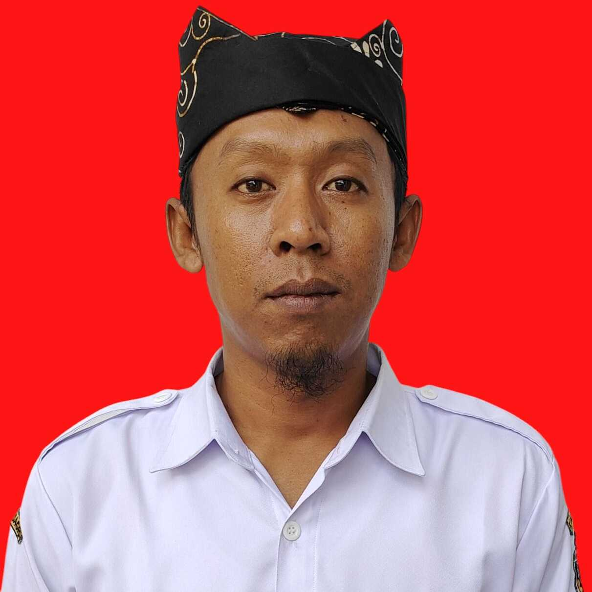

Desa Kumendung
Desa Kumendung Tentang Desa Kumendung
Sejarah Desa Kumendung
Desa Kumendung adalah sebuah desa yang terletak di ujung utara wilayah Kecamatan Muncar. Sebelum berdiri sebagai desa sendiri, Desa Kumendung merupakan bagian dari Desa Sumbersewu. Pada awalnya kumendung adalah sebuah nama dari salah satu dusun di Desa Sumbersewu. Dusun-dusun tersebut yaitu, Dusun Krajan, Dusun Palurejo, dan Dusun Kumendung.
Menurut cerita yang berkembang di masyarakat nama Kumendung diambil dari adanya fenomena alam pada saat musyawarah untuk pengambilan nama dusun (di Desa Sumbersewu) selalu hujan dan mendung sehingga diberi nama “Kumendung”.
Terdirinya Desa Kumendung
Setelah adanya peraturan pemerintah yang mengatur tentang pemekaran wilayah pada tahun 1996, Desa Sumbersewu mengusulkan pemecahan Desa Sumbersewu menjadi 2 ( Dua ) Desa yaitu Desa Sumbersewu yang disebut sebagai Desa Induk dan Desa Kumendung sebagai Desa Persiapan. Sebagai Desa Persiapan, kumendung memiliki 2 (dua) Dusun yaitu, Dusun Kumendung dan Dusun Sumberjoyo.
Dasar SK Gubenur Jawa Timur Nomor 109 Tahun 1997, menyatakan bahwa Desa Kumendung disahkan menjadi Desa Persiapan. Selanjutnya pada tanggal 21 Maret 2000 sesuai dengan SK Gubernur Jawa Timur Nomor 17 Tahun 2000 Desa Persiapan Kumendung menjadi Desa Definitif yaitu Desa Kumendung Kecamatan Muncar Kabupaten Banyuwangi.
Geografi Desa
Sebelum berdiri sebagai desa sendiri, Desa Kumendung merupakan bagian dari Desa Sumbersewu. Pada awalnya kumendung adalah sebuah nama dari salah satu dusun di Desa Sumbersewu. Dusun-dusun tersebut yaitu, Dusun Krajan, Dusun Palurejo, dan Dusun Kumendung. Desa Kumendung merupakan salah satu dari 10 desa di wilayah Kecamatan Muncar. Desa Kumendung terletak di ujung utara wilayah Kecamatan Muncar, dan mempunyai luas wilayah seluas 537.274 hektar.
Batas-batas wilayah Desa Kumendung
- Sebelah Utara : Desa Bomo Kecamatan Blimbingsari.
- Sebelah Selatan : Desa Sumbersewu Kecamatan Muncar.
- Sebelah Timur : Selat Bali.
- Sebelah Barat : Desa Rejoagung Kecamatan Srono
Adapun batas-batas wilayah Desa Kumendung terbagi menjadi :
Point of Interest
Desa Kumendung

Balai Desa Kumendung di foto ada Lisandro Firdaus yang merupakan Ketua kelompok KKN Desa Kumendung dari Uniba berlagak seperti orang yang penting didepan ibu-ibu PKK, Posyandu dan Muslimah Alfayat.

Kegiatan senam bersama yang diselenggarakan setiap seminggu sekali, yang berpartisipasi pun mulai dari pemuda hingga lansia kegiatan ini mengajak agar warga Desa Kumendung menjadi lebih aktif dan sehat.

Posyandu Desa merupakan tempat penting untuk anak-anak Desa Kumendung tumbuh sehat kuat dan pintar.
Struktur Organisasi dan Tata Kerja
Pemerintah Desa Kumendung
KEPALA DESA
Drs. H. HUSAINI
KEPALA DUSUN
SUMBERJOYO
SAHATUN
KEPALA DUSUN
KUMENDUNG

AHMAD ABDILLAH
SEKRETARIS DESA
ANDI SUTRISNO
KEPALA SEKSI
PEMERINTAHAN
LAILATUL NIKMAH, S.Ei
KEPALA SEKSI
KESEJAHTERAAN DAN PELAYANAN

ARIF SUHADAK
KAUR
USAHA & UMUM
ARDHA MIYANTO, SS
KAUR
KEUANGAN
SUNARTI
KAUR
PERENCANAAN
TIKA SANTOSO